Next: A..2 Fully relativistic case
Up: A. Atomic Calculations
Previous: A. Atomic Calculations
Contents
Subsections
Let us assume that the charge density n(r) and the potential V(r)
are spherically symmetric. The Kohn-Sham (KS) equation:
|
- 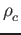∇2 + V(r) - ε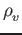ψ(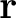) = 0
|
(1) |
can be written in spherical coordinates. We write the wavefunctions as
ψ() =   Ylm(), Ylm(),
|
(2) |
where n is the main quantum
number
l = n - 1, n - 2,..., 0 is angular momentum,
m = l, l - 1,..., - l + 1, - l
is the projection of the angular momentum on some axis.
The radial KS equation becomes:
 - 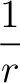 - 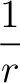 + (V(r) - ε)Rnl(r)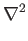Ylm() + (V(r) - ε)Rnl(r)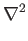Ylm() |
|
|
|
-  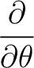sinθ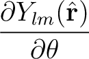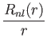 + 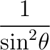Rnl(r) = 0. 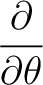sinθ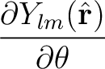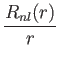 + 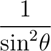Rnl(r) = 0. |
|
|
(3) |
This yields an angular equation for the spherical harmonics
Ylm(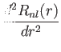):
|
- sinθ + = l (l + 1)Ylm()
|
(4) |
and a radial equation for the radial part Rnl(r):
- + 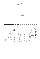 + V(r) - εRnl(r) = 0. + V(r) - εRnl(r) = 0.
|
(5) |
The charge density is given by
n(r) = Θnl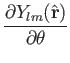Ylm(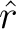)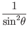 =  Θnl Θnl
|
(6) |
where
Θnl are the occupancies (
Θnl≤2l + 1)
and it is assumed that the occupancies of m are such as to yield
a spherically symmetric charge density (which is true only for closed
shell atoms).
Gradient in spherical coordinates
(r, θ, φ):
|
∇ψ = 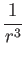,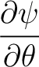,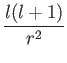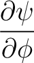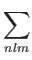
|
(7) |
Laplacian in spherical coordinates:
|
∇2ψ = 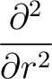(rψ) + sinθ + 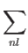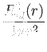
|
(8) |
Next: A..2 Fully relativistic case
Up: A. Atomic Calculations
Previous: A. Atomic Calculations
Contents